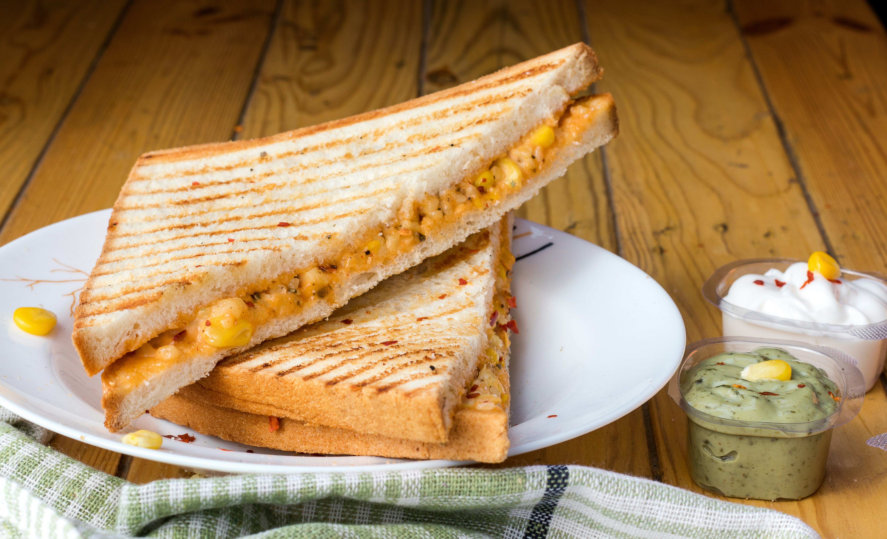

Home
Grilled Cheese

Description
This sandwich is made following the recipe that my great-Grandfather wrote down when he used to make it for my dad. It is a traditional New England-style grilled cheese.
Ingredients
- 1 pound Cheese.
- 1 cup Grilled.
- A whole lot of love.
Steps
- Heat a large pot on the stove.
- Add 2 cups water and the cheese.
- Once boiling, add grill and other yummy stuff.
- Let simmer for 3 hours and enjoy!